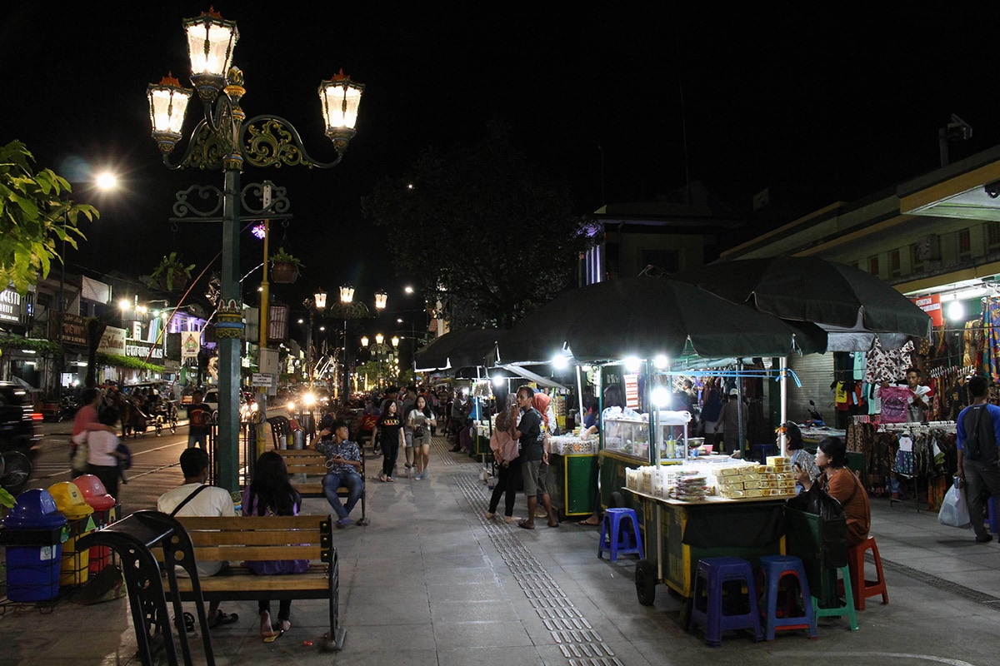
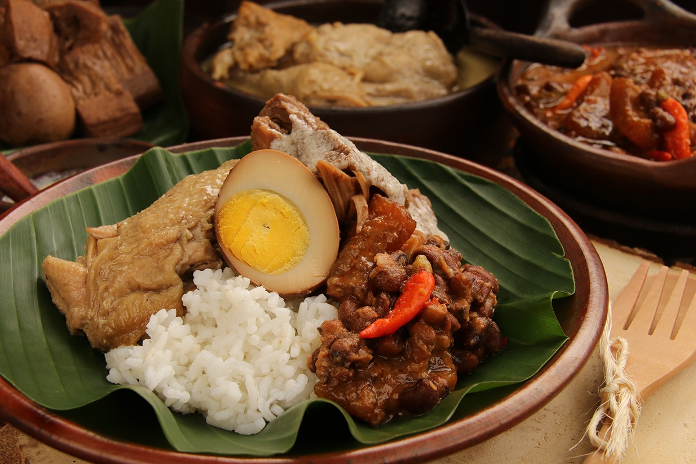

Galery Indonesia
Galery IndonesiaOur Story
Gunung Kidul, Land of Paradise di Selatan Jawa
Kabupaten di pesisir selatan Jawa ini luasnya separo Provinsi Daerah Istimewa Yogyakarta. Kaya akan ragam jenis wisata pegunungan, goa, hutan, pantai, hingga budaya warganya. Paduan keindahan dunia yang pantas disebut sebagai Land of Paradise.
Gunung Kidul merupakan salah satu kabupaten di Daerah Istimewa Yogyakarta, Indonesia. Kabupaten ini berbatasan dengan Kabupaten Klaten dan Kabupaten Sukoharjo di utara, Kabupaten Wonogiri di timur, Samudra Hindia di selatan, serta Kabupaten Bantul dan Kabupaten Sleman di barat. Kabupaten Gunungkidul memiliki 18 kecamatan.
Kawasan yang luas wilayahnya separuh dari propinsi Daerah Istimewa Yogyakarta (DIY) ini memendam banyak potensi wisata. Umumnya, sebagian besar potensi wisata yang ada di Gunungkidul berbasis air, seperti cave tubing di kedalaman goa, river tubing di sungai, air terjun di sejumlah tempat, hingga hamparan pantai laut selatan yang memanjang 65 kilometer, berhadapan langsung dengan Samudera Hindia.
Pantai Eksotis
Karena letak geografis dari Gunung Kidul yang berdekatan dengan pantai laut selatan, membuat destinasi wisata Gunungkidul didominasi oleh wisata pantai. Di kawasan ini, ada sekitar 30 pantai sudah dibuka oleh pemerintah Kabupaten Gunungkidul maupun warga setempat. Sementara sisanya, masih terdapat sekitar 35 pantai yang sama sekali belum dibuka untuk para traveler. Sebagian besar pantainya sangat ikonik dengan beberapa pantainya yang memiliki kontur landai dengan hamparan pasir putih kecokelatan yang cukup memanjang.
Beberapa wisata pantai di kawasan Gunung Kidul diantaranya wisata pantai Baron, yang merupakan cikal bakal di mulainya era wisata alam pantai di wisata Gunung Kidul. Pantai Baron termasuk 2 wisata pantai terbaik di provinsi Yogyakarta setelah pantai Parangtritis Yogyakarta. Keindahan Pantai Baron terlihat dari air laut yang membiru alami dan terdapat karang serta bukit bukit kecil eksotis.
Selain itu, ada juga Pantai Krakal, dengan beberapa spot surfing tersembunyi nan menantang. Garis pantai Krakal yang landai serta bertaburan pasir putih dan memiliki hempasan ombak yang tidak begitu besar namun airnya jernih. Keindahan panorama pantai yang memukau lainnya juga terdapat pada pantai Indrayanti masih sangat bersih dan jernih.
Tidak heran, bila para wisatawan senang berenang di kawasan pantai yang memiliki nama asli pantai Pulang Sawal ini. Tak kalah indah, ada juga Pantai Wedi Ombo yang terkenal dengan memiliki batu karang yang cocok digunakan sebagai spot memancing. Pantai Wedi Ombo memiliki kolam renang yang sering digunakan tempat berenang bagi wisatawan, letak kolam renang ini berada di pinggir pantai dan di pisahkan dengan batu karang.
Di kawasan Gunungkidul masih terdapat pantai pantai-pantai eksotis lain seperti Pantai Drini, Pantai Kukup, Pantai Nglambor untuk snorkeling, atau bergelantungan ala Indiana Jones di Pantai Timang. Karena terdiri dari perbukitan dan berbatu karang, pantai-pantai selatan di Gunungkidul kerap disebut-sebut mirip dengan pantai-pantai di Bali.

Pegunungan Sewu
Sebagian besar wilayah Gunung Kidul juga memiliki topografi perbukitan dan bukit-bukit kapur (karts) dengan paduan bebatuan karang yang kokoh. Keragaman potensi wisata pantai di Gunungkidul semakin lengkap oleh suguhan panorama bukit dan gunung yang mengelilingi hampir seluruh wilayah kabupaten ini. Gunung-gunung tersebut membentuk sebuah bentang yang disebut Pegunungan Sewu atau Seribu.
Bermula dari Gunungkidul hingga Tulungagung di Jawa Timur selatan. Inilah yang membuat Gunungkidul masuk dalam kawasan Geopark Gunungsewu bersama kabupaten Wonogiri di Jawa Tengah dan kabupaten Pacitan di Jawa Timur. Selain pantai dan pegunungan, destinasi wisata Gunungkidul semakin lengkap dengan topografi perbukitan, hutan, bawah tanahnya. Sehingga di kawasan ini juga terdapat destinasi Gunung Api Purba Nglanggeran, goa Jomblang, air terjun Sri Getuk, hingga hutan Turunan.

Goa-goa Eksotis
Tak hanya itu, di kawasan ini juga terdapat wisata goa-goa yang eksotis, diantaranya goa Pindul, yang menjadi salah satu Landmark tempat wisata Gunung Kidul berupa goa unik nan indah. Karena dalam goa ini dialiri sungai bawah tanah mulai dari mulut gua hingga ujung gua, pengunjung bisa menikmati keindahan staglatit yang masih tumbuh ke bawah langit langit dengan menyusuri area tersebut menggunakan kapal karet atau tubing.
Selain gua Pindul, ada pula goa Jomblang yang tidak kalah indah. Gua Jomblang merupakan satu diantara ratusan komplek wisata gua Gunung Kidul yang terkenal akan keunikan serta keindahan yang di sebut sebut dengan cahaya dari surga. Gua ini terletak pada kawasan pegunungan karst di Gunung Kidul.
Gua lain yang yang terdapat di kawasan Gunungkidul adalah Goa Rancang Kencana. Pintu masuk goa yang berada satu kawasan dengan Air Terjun Sri Gethuk ini berada di bawah permukaan tanah, sehingga pengunjung yang masuk harus menuruni anak tangga yang berada di depan mulut goa.
Kekayaan potensi wisata Gunung Kidul ini makin diperkaya dengan karakter masyarakat yang memiliki potensi budaya dan kesenian turun-temurun warisan leluhur. Mulai dari kerajinan, kesenian, serta tradisi adat dan budaya. Sebutlah misalnya kerajinan batik, ukir kayu dan bambu, hingga batuan. Lalu kesenian Cing-cing Goling serta tradisi bersih desa Rasulan.
Other Story